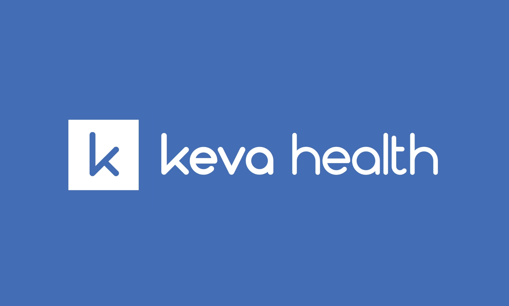
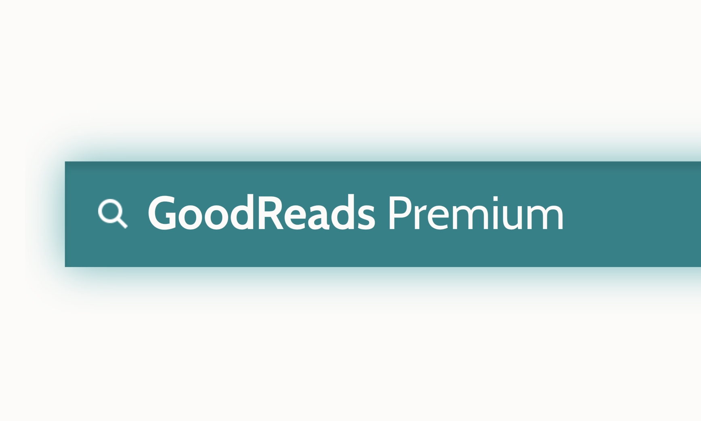

Completed / WordPress
Keva Health Website
The redesign of company website was a major part of my internship responsibility at
Keva Health. The website, powered by WordPress, features company’s remote monitoring app for asthma patients. Its
clean and responsive design allows the visitor to find the right information right away on any device.
The project is currently in use at Keva Health.

Completed / Flask, PostgreSQL, BootStrap
GoodReads Premium
A book database that allows logged in users to query a
sample catalog of more than 5,000 popular books. With an account, users can also view relevant book
information and share their reviews on a specific book that they have read. It also includes
an API that returns JSON file of book information with valid ISBN number.

Completed / Java, JavaFX
Evolution
A fully functional Flappy Bird game where users can either choose to play
the game themselves, or let the bird learn to jump on their own. The neural network implemented on each
bird powers their independent judgement, and by “natural selection”, the survival rate of the herd
increase overtime. Submitted as final project for Introduction to Object-oriented Programming (CSCI
0150).

Ongoing / JavaScript, HTML/CSS
Brown Institute for Policy Website
Designed and implemented website for Brown Institute for Policy, a student run
think tank at Brown University. This is a team project assigned by Full Stack at Brown. You can view the progress
live at Official BIP Website.

Ongoing / Python, Pandas
Trade Tracker
A command line interface (CLI) that allow users to log their most recent trade and
track the realized profits (or loss) at any given trade. Right now, it is still a work in progress, please check
back in a few weeks!